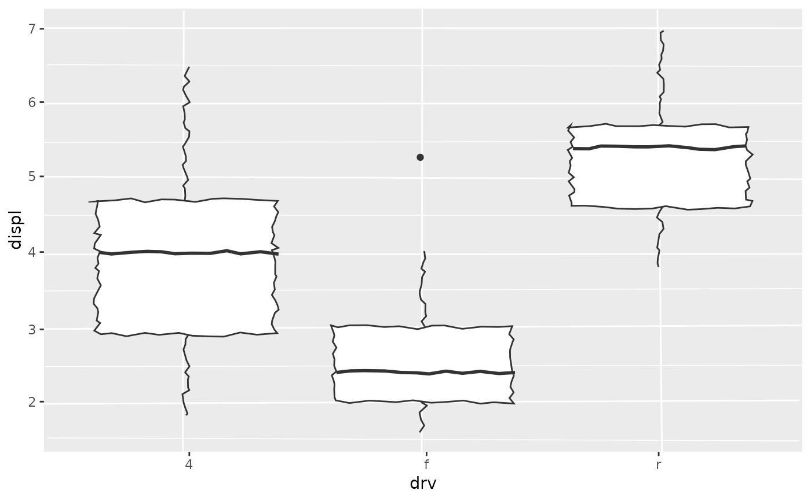

All coord_*() functions (like coord_transform()) return a Coord* object
(like CoordTransform). These objects contain methods that support the
coordinate systems in ggplot2.
Details
Each of the Coord* objects is a ggproto() object, descended from the
top-level Coord, and each implements various methods and fields.
The object and its parameters are chaperoned by the Layout class.
To create a new type of Coord object, it is recommended
to extend not the base Coord class, but one of its children like
CoordCartesian.
When overriding the transform() method, it may be necessary to adapt the
implementation of render_bg() and possibly axis placement too.
An important data structure that coordinate systems create is the
panel_params structure. When overriding that structure, many methods may
need to be adapted as well.
Fields
defaultScaler boolean indicating whether this is the default coordinate system. Non-default coordinate systems raise a message when a new system replaces it.
clipA scalar string grid setting controlling whether layers should be clipped to the extent of the plot panel extent. Can be
"on"to perform clipping,"off"to not clip, or"inherit"to take on the setting of the parent viewport.reverseA scalar string giving which directions to reverse. For Cartesian systems, can be
"none,"x","y"or"xy"for both. Non-Cartesian may define their own settings.setup_paramsDescription
A function method for modifying or checking the parameters based on the data. The default method parses the
expandparameter.Usage
Coord$setup_params(data)Arguments
dataA list of data frames. The first item is the global data, which is followed by layer data in subsequent items.
Value
A list of parameters
setup_dataDescription
A function method for modifying or checking the data prior to adding defaults. The default method returns data unaltered.
Usage
Coord$setup_data(data, params)Arguments
dataA list of data frames. The first item is the global data, which is followed by layer data in subsequent items.
paramsA list of parameters coming from the
setup_params()method.
Value
A list of data frames of the same length as the
dataargumentsetup_layoutDescription
A function method that acts as a hook for the coordinate system to have input on the layout computed by facets.
Usage
Coord$setup_layout(layout, params)Arguments
layoutA data frame computed by
Facet$compute_layout(). Typically contains the faceting variables,ROW,COL,PANEL,SCALE_XandSCALE_Yvariables.paramsA list of parameters coming from the
setup_params()method.
Value
A data frame from the modified
layoutargument. The default creates a newCOORDcolumn to identify unique combinations of x and y scales for efficiency purposes. It should never remove columns.modify_scalesDescription
A function method for modifying scales in place. This is optional and currently used by CoordFlip and CoordPolar to ensure axis positions are conforming to the coordinate system.
Usage
Coord$modify_scales(scales_x, scales_y)Arguments
scales_x,scales_yA list of trained scales for the
xandyaesthetics respectively.
Value
Nothing, this is called for the side effect of modifying scales.
setup_panel_paramsDescription
This function method is used to setup panel parameters per panel. For efficiency reasons, this method is called once per combination of
xandyscales. It is used to instantiate ViewScale class objects and ranges for position aesthetics and optionally append additional parameters needed for thetransform()method and rendering axes.Usage
Coord$setup_panel_params(scale_x, scale_y, params)Arguments
scale_x,scale_yA list of trained scales for the
xandyaesthetics respectively.paramsA list of parameters coming from the
setup_params()method.
Value
A named list of view scales, ranges and other optional parameters.
setup_panel_guidesDescription
This function method is used to initiate position guides for each panel. For efficiency reasons, this method is called once per combination of
xandyscales. For the primary and secondary positions, it should resolve guides coming from theplot$guidesfield andScale$guidefields and set appropriateGuide$params$positionparameters.Usage
Coord$setup_panel_guides(panel_params, guides, params)Arguments
panel_paramsA list of ViewScale class objects and additional parameters from the
setup_panel_params()method.guidesA
<Guides>ggproto class.paramsA list of parameters coming from the
setup_params()method.
Value
The
panel_paramsobject but with a Guides class object appended with the name 'guides'.setup_panel_guidesDescription
This function method is used to train and transform position guides for each panel. For efficiency reasons, this method is called once per combination of
xandyscales.Usage
Coord$train_panel_guides(panel_params, layers, params)Arguments
panel_paramsA list of ViewScale class objects, a Guides class object and additional parameters from the
setup_panel_params()method.layersA list of layers from
plot$layers.paramsA list of parameters coming from the
setup_params()method.
Value
The
panel_paramsobject, but with trained and transformedguidesparameter.transformDescription
This function method is used to apply transformations and rescale position aesthetics. This method is used in several places:
The Geom drawing code, used through
coord_munch()in many Geoms.The Guide transform method
Panel grid transformation in
render_bg()
Usage
Coord$transform(data, panel_params)Arguments
dataA data frame with columns for numeric position aesthetics.
panel_paramsA list of ViewScale class objects and additional parameters from the
setup_panel_params()method.
Value
The
dataargument with rescaled and transformed position aesthetics.distanceDescription
This function method is used to calculate distances between subsequent data points.
coord_munch()uses this method determine how many points should be used to interpolate.Usage
Coord$distance(x, y, panel_params)Arguments
x,yx and y coordinates of a set of points in data space.
panel_paramsA list of ViewScale class objects and additional parameters from the
setup_panel_params()method.
Value
The
dataargument with rescaled and transformed position aesthetics.backtransform_rangeDescription
This function method is used to convert ranges from transformed coordinates back into data coordinates. The data coordinates may possibly be scale- transformed. It is used in
coord_munch()to ensure limits are in data coordinates.The back-transformation may be needed for coords such as
coord_transform(), where the range in the transformed coordinates differs from the range in the untransformed coordinates.Usage
Coord$backtransform_range(panel_params)Arguments
panel_paramsA list of ViewScale class objects and additional parameters from the
setup_panel_params()method.
Value
A list containing numeric ranges for
xandyin data coordinates.rangeDescription
This function method is a small helper method to extract ranges from the
panel_paramsobject. It exists becausepanel_paramscan be opaque at times.Usage
Coord$range(panel_params)Arguments
panel_paramsA list of ViewScale class objects and additional parameters from the
setup_panel_params()method.
Value
A list containing numeric ranges for
xandy.draw_panelDescription
This function method is used to orchestrate decorating panel drawings with foreground and background drawings. It is called once per panel, invokes the
render_fg()andrender_bg()methods and enforces theclipfield.Usage
Coord$draw_panel(panel, params, theme)Arguments
panelA grob containing drawn layers and facet foreground and background.
paramsA list of ViewScale class objects and additional parameters from the
setup_panel_params()method.theme
Value
A grob with panel content.
render_fgDescription
This function method is used to draw the panel foreground. For all intents and purposes is just the
panel.bordertheme element, but you can repurpose this method.Usage
Coord$render_fg(panel_params, theme)Arguments
panel_paramsA list of ViewScale class objects and additional parameters from the
setup_panel_params()method.theme
Value
A grob with panel foreground.
render_bgDescription
This function method is used to draw the panel background. Typically this is a combination of the
panel.backgroundandpanel.gridtheme elements.Usage
Coord$render_bg(panel_params, theme)Arguments
panel_paramsA list of ViewScale class objects and additional parameters from the
setup_panel_params()method.theme
Value
A grob with panel background.
labelsDescription
This function method is used to format axis titles. It is used in some coordinate systems to (conditionally) swap x and y labels.
Usage
Coord$labels(labels, panel_params)Arguments
labelsA named list containing an
xlist and aylist. Thexandylists haveprimaryandsecondarylabels.panel_paramsA list of ViewScale class objects and additional parameters from the
setup_panel_params()method.
Value
A list with the same structure and names as the
labelsargument.aspectDescription
This function method that gives the aspect ratio for panels. It allows for
CoordFixedto compute an aspect ratio based on data ranges.Usage
Coord$render_bg(panel_params, theme)Arguments
rangesA list of ViewScale class objects and additional parameters from the
setup_panel_params()method. If there are multiple panels, the parameters for the first panel is used.
Value
A scalar numeric
render_axis_h,render_axis_vDescription
These function methods are used to render axes to place at the outside edge of panels. Interior axes should not be rendered here. The
render_axis_h()methods produces the horizontal axes for the top and bottom position. Therender_axis_v()method renders the vertical axes for the left and right position.Usage
Coord$render_axis_h(panel_params, theme Coord$render_axis_v(panel_params, theme)Arguments
panel_paramsA list of ViewScale class objects, a Guides class object and additional parameters from the
setup_panel_params()method.theme
Value
For
render_axis_h()a named list where"top"and"bottom"are grobs with an axis. Forrender_axis_v()a named list where"left"and"right"are grobs with an axis. These grobs should bezeroGrob()when no axes should be rendered.is_linearDescription
This function method is used to signal whether a coordinate system is linear. In
coord_munch()and several Geom drawing methods, it is used to determine whether points should be interpolated.Usage
Coord$is_linear()Value
A scalar boolean.
is_freeDescription
This function method is used to signal whether a coordinate system supports free scaling of axes in faceted plots. This should generally return
FALSEfor coordinate systems that enforce a fixed aspect ratio.Usage
Coord$is_free()Value
A scalar boolean.
Conventions
The object name that a new class is assigned to is typically the same as the
class name. Coord class names are in UpperCamelCase and start with the
Coord* prefix, like CoordNew.
A constructor function is usually paired with a Coord class. The constructor
copies the coord class and populates parameters. The constructor function name
should take the Coord class name and be formatted with snake_case,
so that CoordNew becomes coord_new().
See also
The new coords section of the online ggplot2 book.
Examples
# Extending the class
CoordJitter <- ggproto(
"CoordJitter", CoordCartesian,
# Fields
amount = 0,
# Methods
is_linear = function() FALSE,
transform = function(self, data, panel_params) {
data <- ggproto_parent(CoordCartesian, self)$transform(data, panel_params)
data$x <- jitter(data$x, amount = self$amount)
data$y <- jitter(data$y, amount = self$amount)
data
}
)
# Building a constructor
coord_jitter <- function(amount = 0.005, xlim = NULL, ylim = NULL, expand = TRUE,
clip = "on", reverse = "none") {
ggproto(
NULL, CoordJitter,
amount = amount,
limits = list(x = xlim, y = ylim),
reverse = reverse, expand = expand, clip = clip
)
}
# Use new coord in plot
set.seed(42)
ggplot(mpg, aes(drv, displ)) +
geom_boxplot() +
coord_jitter()
